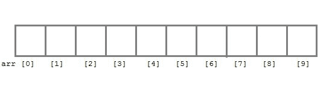
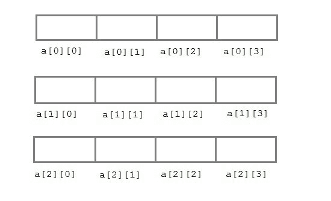

C 语言中的数组
在 C 语言中，arrays被引用为结构化的数据类型。数组被定义为存储在连续存储单元中的同质数据的有限有序集合。
这里的话，
- 有限 意味着数据范围必须定义。
- 有序 意味着数据必须存储在连续的内存地址中。
- 同质 意味着数据必须是相似的数据类型。
使用数组的例子，
- 要存储员工或学生姓名列表，
- 存储学生的分数，
- 或者存储数字或字符列表等。
由于数组提供了一种简单的表示数据的方式，因此它被归入 C 语言中的数据结构中。C 语言中的其他数据结构有结构、列表、队列、树等。数组不仅可以用来表示简单的数据列表，还可以用来表示二维或三维的数据表。
声明数组
像任何其他变量一样，数组必须在使用前声明。数组声明的一般形式是，
data-type variable-name[size];
/* Example of array declaration */
int arr[10];

这里int是数据类型，arr是数组的名称，10 是数组的大小。意思是数组arr只能包含 10 个int类型的元素。
数组的索引从0开始到大小-1 ，即arr数组的第一个元素将存储在arr[0]地址，最后一个元素将占用arr[9]。
数组的初始化
声明数组后，必须对其进行初始化。否则将包含垃圾值(任意随机值)。数组可以在编译时或运行时初始化。
编译时数组初始化
数组元素的编译时初始化与普通变量初始化相同。数组初始化的一般形式是，
data-type array-name[size] = { list of values };
/* Here are a few examples */
int marks[4]={ 67, 87, 56, 77 }; // integer array initialization
float area[5]={ 23.4, 6.8, 5.5 }; // float array initialization
int marks[4]={ 67, 87, 56, 77, 59 }; // Compile time error
需要记住的一件重要的事情是，当你给出的初始值设定项(数组元素)比声明的数组大时，编译器会给出一个错误。
#include<stdio.h>
void main()
{
int i;
int arr[] = {2, 3, 4}; // Compile time array initialization
for(i = 0 ; i < 3 ; i++)
{
printf("%d\t",arr[i]);
}
}
2 3 4
运行时数组初始化
也可以在运行时使用scanf()函数初始化数组。这种方法通常用于初始化大型数组，或者用用户指定的值初始化数组。例如，
#include<stdio.h>
void main()
{
int arr[4];
int i, j;
printf("Enter array element");
for(i = 0; i < 4; i++)
{
scanf("%d", &arr[i]); //Run time array initialization
}
for(j = 0; j < 4; j++)
{
printf("%d\n", arr[j]);
}
}
二维数组
C 语言也支持多维数组。多维数组最简单的形式是二维数组。行和列的索引都从0开始。
二维数组声明如下:
data-type array-name[row-size][column-size]
/* Example */
int a[3][4];

数组也可以一起声明和初始化。例如，
int arr[][3] = {
{0,0,0},
{1,1,1}
};
注意:在上面的示例中，我们没有为数组分配任何行值。这意味着我们可以初始化任意数量的行。但是，我们必须始终指定列数，否则会产生编译时错误。这里，创建了一个2*3多维矩阵。
二维数组的运行时初始化
#include<stdio.h>
void main()
{
int arr[3][4];
int i, j, k;
printf("Enter array element");
for(i = 0; i < 3;i++)
{
for(j = 0; j < 4; j++)
{
scanf("%d", &arr[i][j]);
}
}
for(i = 0; i < 3; i++)
{
for(j = 0; j < 4; j++)
{
printf("%d", arr[i][j]);
}
}
}